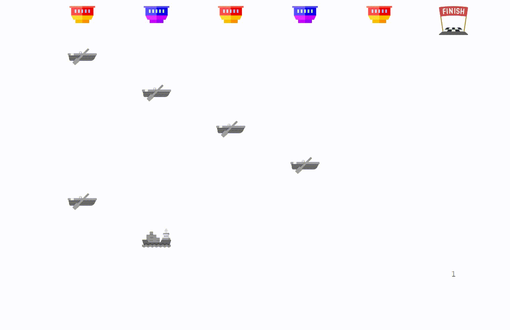

Camouflage Game¶
{kind=link}
This environment is designed to test any leader’s strategy against the follower under a camouflage game, where the leader’s goal is to maximize reward by successfully bringing valuable platforms to the finish line without being detected by the attacker. Each time a ship attempts to move past a sensor, the follower may activate the sensor and capture the ship at their discretion. However, once a sensor is activated, it falls into a cooldown period of 2 rounds, in which the leader may move any 2 ships past it risk-free.
The demo above simulates a game with 7 platforms and 5 sensors deployed by the follower. Valuable platforms are displayed as cargo ships while unimportant ones as boats. 2 types of sensor are available for this game. Here the demo presents a naive attacker strategy, where red sensors will always detect platform #1, #3, #5, and #7, and purple sensors will always detect platform #2, #4, and #6. Notice how ship #1 is immediately captured by the first sensor, and how ship #2 and #3 move past the first sensor while it’s in cooldown. In this particular game, the leader chooses to prioritize the safety of ship #7, the most valuable one, over all other ships. All other platforms end up getting captured by the follower, and thus the total reward under this strategy is 1.0 from the value of platform #7 alone.